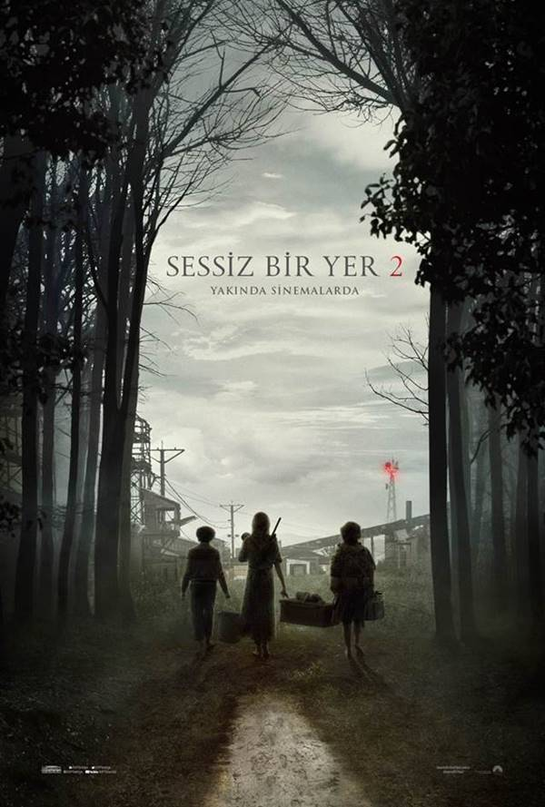
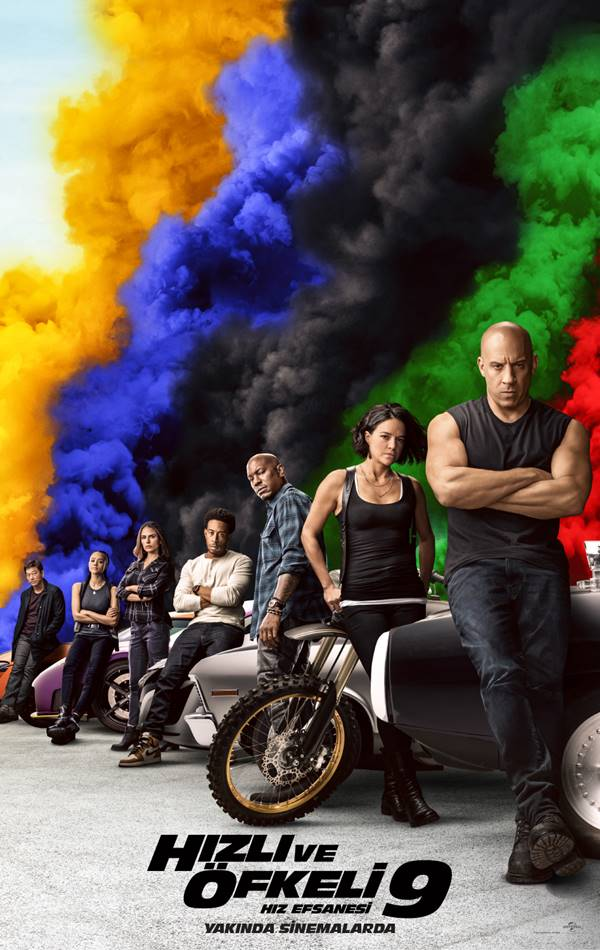
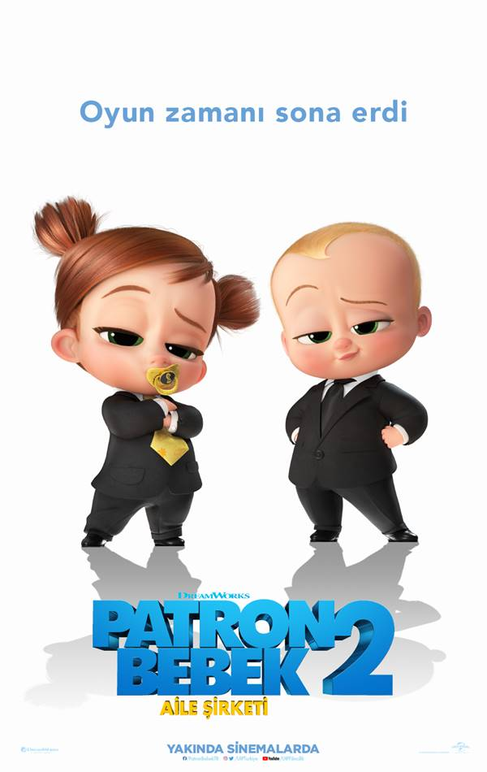
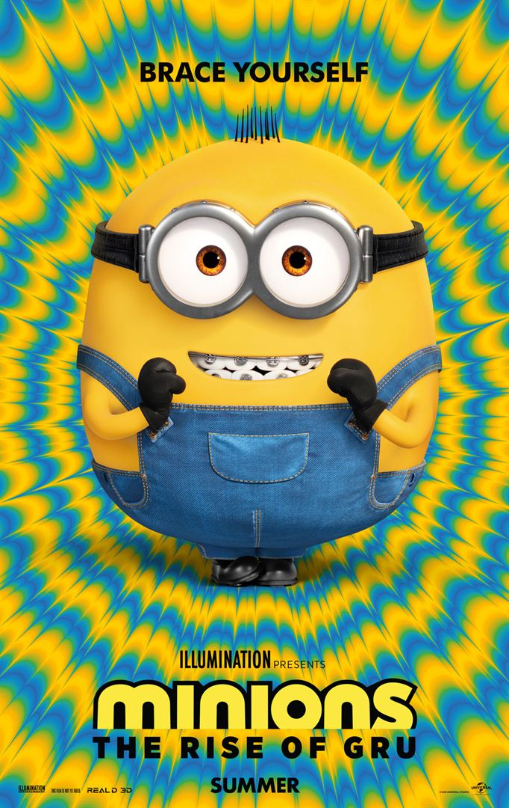
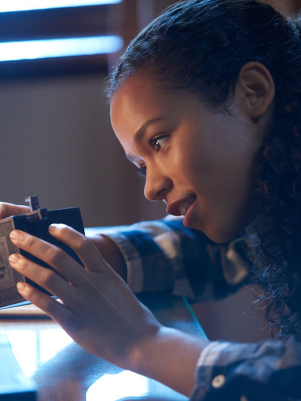
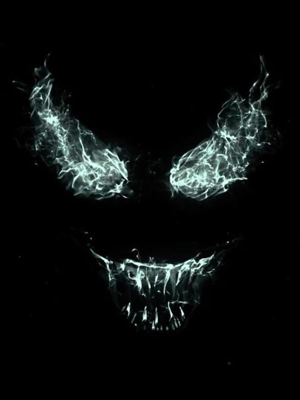
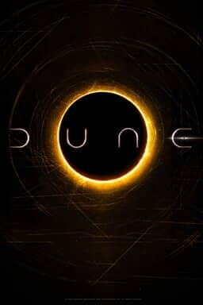

Film Kutusu
En Güncel Film İncelemeleri
Hoşgeldiniz
Vizyondaki filmler ve vizyona girecek olan filmleri, en popüler filmler hakkında merak ettiklerinizi sitemizde bulabilirsiniz.
2021'de Vizyona Girecek Filmler
- Sessiz Bir Yer 2 
- Hızlı ve Öfkeli 9 
- Patron Bebek 2: Aile Şirketi 
- Minyonlar 2: Gru'nun Yükselişi 
- Escape Room 2 
- Venom: Let There Be Carnage 
- Çöl Gezegeni 
- Matrix 4
Sessiz Bir Yer 2, yönetmenliğini John Krasinski’nin üstlendiği 2018 yapımı korku filmi Sessiz Bir Yer’in devam halkası. Başrollerinde yönetmenin yanı sıra Emily Blunt, Noah Jupe ve Millicent Simmonds’ın yer aldığı ilk filmde, güvenlikleri için seslerinden vazgeçen bir ailenin hikayesi konu ediliyordu. Filminin devam halkasında ise, ilk filmde yaşanan saldırıdan kurtulmayı başaran kişilerin hayatlarının konu edilmesi bekleniyor.
Dominic Toretto’nun artık tek önceliği oğlu Brian’ı korumaktır. Oğlu ve Letty ile birlikte sakin bir yaşam süren Toretto, istese de geçmişinden kurtulamaz. Bu kez geçmişi ile yüzleşmek zorunda kalan Toretto, siber suçlu Cipher ile birlikte çalışan kardeşi Jakob’a karşı savaşmak zorunda kalır. Serinin 9. filmi olan Fast and Furious 9'ın oyuncu kadrosunda Vin Diesel, Michelle Rodriguez, Jordana Brewster, Lucas Black, Tyrese Gibson, Lex Elle ve John Cena gibi birçok isim yer alıyor.
Artık birer yetişkin olan Tim ve kardeşi Ted, zamanla birbirlerinden uzaklaşmıştır. Farklı yönlere savrulan iki kardeşten Tim evlenmiş ve bir çocuk babası olmuştur. Ted ise koruma fonu CEO’sudur. Süper anne Carol, süper zeki kızları Tabitha ve süper şirin yeğenleri bebek Tina ile birlikte banliyöde yaşayan Tim, hayatından oldukça memnundur. Amcası Ted’i örnek alan, onun yolundan gitmek isteyen Tabitha, gittiği Prestijli İleri Çocukluk Dönemi Acorn Merkezi’nde sınıf birincisidir. Ancak Tim kızının çok çalışmasından pek de memnun etmez çünkü çocukluğunu kaçırdığunu düşünür. Bu sırada bebek Tina, Tabitha’nın gittiği okulun ve kurucusu olan Dr. Armstrong’un karanlık sırları olduğunu öğrenir. Tina’nın bu sırları ortaya çıkarmak üzere BabyCorp için gizli bir görevde olduğunu açıklamasıyla Tim ve Ted yeniden bir araya gelmek zorunda kalır.
Stuart, Kevin ve Bob bir süpermarketten muzlarını alamadıkları için oldukça sinirlidir. Bu duruma çözüm bulmak isteyen ekip, Beyaz Saray’a doğru yola koyulurlar. Durumu şikayet etmek için Beyaz Saray’a geldiklerinde ise kendilerini kapının önünde bulurlar. Kovuldukları için şaşkın ve bir o kadar da sinirli olan Stuart, Kevin ve Bob, kendilerine yapılanların intikamını almak için ABD hükümetini devirmek için zorlu bir maceraya atılır. Bu maceralarında onlara Gru da eşlik edecektir.
2019 yapımı Ölümcül Labirent filminin devam halkası olan Escape Room 2'nin yönetmen koltuğunda ilk filmde olduğu gibi Adam Robitel oturuyor. Filmin kadrosunda Taylor Russell, Logan Miller, Indya Moore, Isabelle Fuhrman, Holland Roden, Thomas Cocquerel gibi isimler yer alıyor. Serinin ilk filmi, kaçış odasından kurtulmaya çalışan altı yabancının hikayesini konu ediyordu.
Venom adı verilen bu organizmanın taşıyıcısı olan Eddie Brock'un hikayesinin anlatıldığı "Venom" filminin 2. devam halkası olan yapımın başrolünü bir kez daha Tom Hardy üstleniyor.
Uzak bir gelecekte geçen "Dune", ailesi çöl gezegeni Arrakis’in kontrolüne sahip olan Paul Atreides’in hikayesini anlatıyor. Galaksinin farklı noktalarındaki gezegenler, rakip feodal aileler tarafından yönetilmektedir. Çok değerli bir kaynağın tek üreticisi olan çöl gezegeni Arrakis'in kontrolü asil aileler arasında son derece talep görmektedir. "Baharat" adı verilen bu kaynak, yüksek bilinç ve uzun bir yaşam süresi sunarken, beraberinde çok ciddi yan etkileri de getirmektedir. Ayrıca yıldızlararası yollarda gezinmeye yardımcı olan kaynak da bu "baharat"tır. Bu kaynağı elde etmek isteyen feodal rakiplerden Harkonen ailesi tarafından Paul ve ailesine tuzak kurulur. Bu tuzağın sonucunda Paul'un ailesi darmadağın olarak firari hale gelir. Paul, ailesinin Arrakis kontrolünü yeniden kazanması için bir isyan başlatırken, tüm evrenin seyrini değiştirebilme ihtimalini yakalayacaktır.

Matrix 4, 22 Aralık 2021'de vizyona giriyor. Yönetmenliğini Lana Wachowski'nin yaptığı filmde Keanu Reeves, Carrie-Anne Moss, Jada Pinkett Smith gibi oyuncular dikkat çekiyor. Matrix 4 1999 yılında yayınlanmaya başlayan Matrix serisinin dördüncü filmi. 2021'in merakla beklenen yapımlarından biri olan Matrix 4'ün konusu ile alakalı net bir bilgi paylaşılmasa da filmde bu sefer ilham verici bir aşk hikayesinin anlatılacağı ve bol aksiyon unsurunun olacağı belirtildi. Filmle ilgili olarak sizleri şaşırtacak bir diğer ayrıntı ise Matrix'te bu kez geçmişe gitmek yok.
Kaynakça
Seanslar, haberler, sinema ve dizi özel dosyaları, en son fragmanlar ve çok daha fazlası için beyazperde.com adresinden ulaşabilirsiniz.